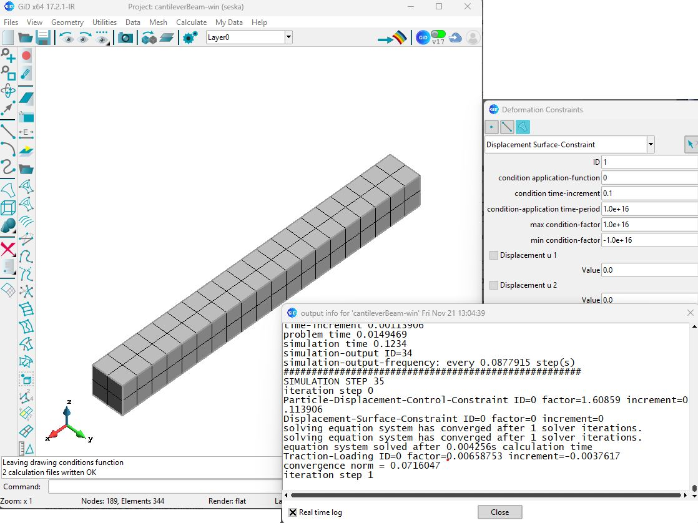

01 / 03
Scientific computing · HPC
SESKA finite-element computational suite
Maintaining and extending an advanced C++ and Fortran finite-element platform for nonlinear material analysis, including its first full Linux-to-Windows port and deployment to UCT computing environments.
View project note
Nonlinear computational mechanics